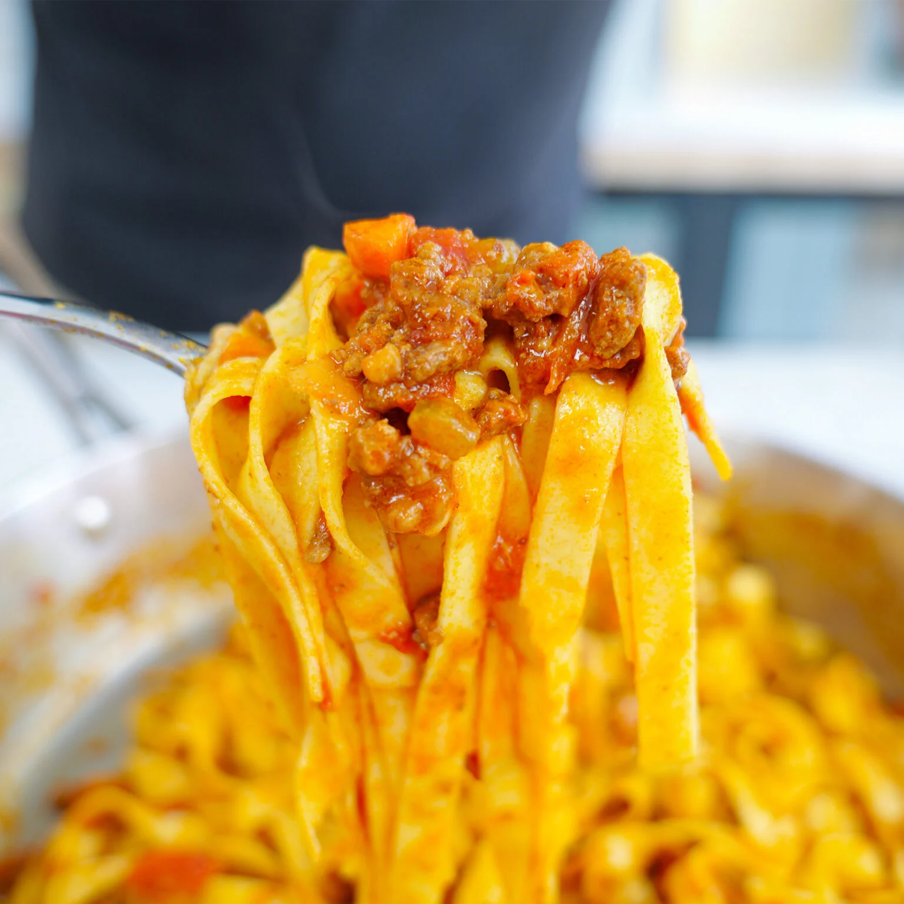

Bolognese

Ingredients
- 1 Onion
- 3 Carrots
- 3 Celery Stalks
- 500g Ground Beef
- 500g Minced Pork
- 200g Minced Veal (optional)
- If you use Veal only use 300g Minced Pork instead of 500g
- 1L Passata
- 400g Peeled Tomatoes
- 150g Tomato Paste
- 1 Glass of Redwine
- 1 Glass of Whole Milk
Steps
-
Heat the pot with olive oil over medium heat. Sauté
onions when the pot is hot.
-
Put carrots and celery into the pot and stir.
Cook for 4-5 minutes.
-
Put half a glas of redwine into the pot and simmer
on low heat until all wine has evaporated.
-
Put the meat into the pot and shred with a wooden spoon.
Season with pepper and salt.
-
Stir occasionaly to cook the meat evenly.
-
As soon as the water released from the meat has fully
evaporated, give another half a glass of wine into the pot.
-
When the redwine has evaporated: put tomato paste, crushed tomatoes
and passata into the pot And stir thoroughly. Crush tomatoes with
a wooden spoon.
-
Simmer on low heat.
-
After about 1 1/2 hours put 1 liter boiling water into the pot and stir.
-
After another hour maybe put some more boiling water into
the pot if the sauce is too reduced.
- Take the pot off the heat after approx. 5 hours and let the sauce rest.
-
Put 1 cup of whole milk into the sauce stir and heat
over low heat.
- Serve with Tagliatelle or Parpadelle.